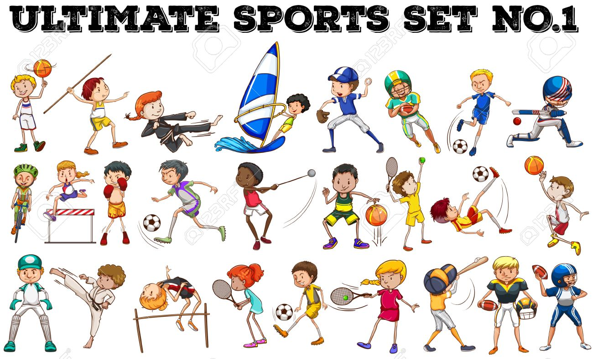
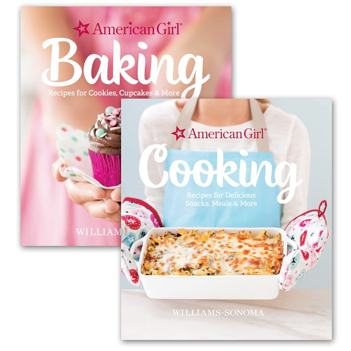

Since I was a kid I started playing Taekwondo with the guidance of my Father who
happened to be a Coach,Instructor,Poomsae(Demo) Chairman in ARMM and a Division,Regional
and National Referee of the team I am with.Through this hobby I was given an opportunity
to travel around the Philippines and went to different amazing tourist spots be it in Luzon,
Visayas or Mindanao!Some says that I am very lucky to be a daughter of Professional Taekwondo
Official for I can go anywhere because of taekwondo but one thing I wan't them to know,and
that is,YES,indeed I am lucky to be his Daughter but the oportunity to experienced those places was
not just about my Father having a high position but also because of my hardworks in every training,winning
and lossing,that I have experienced all through out this years.
Playing Chess,Running and Many Other Sports

I can say that sometimes I can be a sporty person because I play different sports whether it is an
indoor or outdoor sports,mentally tiring or phisically tiring,long hours or not.Almost,anything.
Going To An Adventure
Whenever I'm in a vacation,I always prefer a place where I can do adventure activities like mountain
climbing,see diving,trekking,Island hopping and most especially,my favorite is the cliff diving which I
often do whenever we are at the beach.I don't know why I'm fond of Adventure even there are times that my
life was at rist.Maybe it is because aside from dreaming,doing adventure activities awakens the excitement
within me and somehow it became my escape from reality.
Reading Novels
I love reading stories with different unique genres like Action,Horror,Mystery/Thriller,Fantasy,Adventure,
Sci-fi,Vampire,Warevolves and many more but,there is an exemption.I don't read pure romance genre stories unless
it have a touch of the genres that I like the most.
Cooking and Baking

Whenever I have a free time I cook and bake foods that I know and sometimes,I'm also trying to do or experiment a new dish.One of my specialty in baking is Bake Spaghetti with lots of mozzarella.I cook any kind of food but I am
more good making desserts like cakes,tarts,pies,cupcakes,leche gulaman and many more.